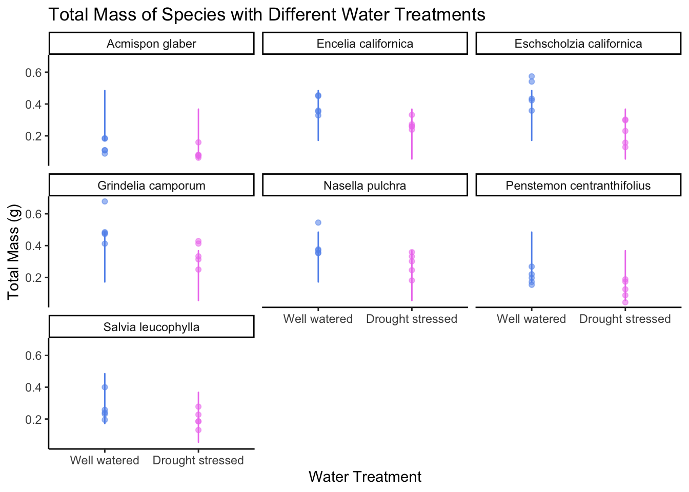

# comparing models
modelsummary::modelsummary # this function takes a list of modelsHomework 3
Problem 1
a. Making a table
Table 1: Table displaying model estimates for the null and models 1-4.
models <- list(
"null" = model0, # "model name" = model object
"model 1" = model1,
"model 2" = model2,
"model 3" = model3,
"model 4" = model4)| null | model 1 | model 2 | model 3 | model 4 | |
|---|---|---|---|---|---|
| (Intercept) | 0.279 | 0.080 | 0.047 | -0.033 | 0.055 |
| (0.017) | (0.056) | (0.054) | (0.067) | (0.025) | |
| sla | 0.000 | 0.001 | 0.001 | ||
| (0.000) | (0.000) | (0.001) | |||
| water_treatmentWell watered | 0.122 | 0.090 | 0.117 | ||
| (0.020) | (0.029) | (0.017) | |||
| species_nameEncelia californica | 0.238 | 0.115 | 0.218 | ||
| (0.051) | (0.059) | (0.032) | |||
| species_nameEschscholzia californica | 0.234 | 0.222 | 0.232 | ||
| (0.033) | (0.041) | (0.032) | |||
| species_nameGrindelia camporum | 0.330 | 0.226 | 0.313 | ||
| (0.047) | (0.054) | (0.032) | |||
| species_nameNasella pulchra | 0.241 | 0.168 | 0.229 | ||
| (0.040) | (0.048) | (0.032) | |||
| species_namePenstemon centranthifolius | 0.061 | -0.006 | 0.050 | ||
| (0.039) | (0.047) | (0.032) | |||
| species_nameSalvia leucophylla | 0.117 | 0.139 | 0.120 | ||
| (0.033) | (0.041) | (0.032) | |||
| Num.Obs. | 70 | 70 | 70 | 70 | 70 |
| R2 | 0.000 | 0.755 | 0.303 | 0.610 | 0.754 |
| R2 Adj. | 0.000 | 0.722 | 0.282 | 0.566 | 0.726 |
| AIC | -75.2 | -157.5 | -96.4 | -127.1 | -159.2 |
| BIC | -70.7 | -135.0 | -87.4 | -106.8 | -139.0 |
| Log.Lik. | 39.580 | 88.741 | 52.220 | 72.538 | 88.598 |
| RMSE | 0.14 | 0.07 | 0.11 | 0.09 | 0.07 |
Note 1: notice all the information at the bottom of the modelsummary output - if you only needed the AIC and delta AIC, what could you do? see package documentation for help Note 2: you will always have to report the F-statistic, degrees of freedom, test statistic, p-value, ⍺, and R2. Whether or not this information is in a table is up to you.
b. Statistical methods
In this statistical analysis, I examined the influence of specific leaf area (SLA), species, and water treatment on total growth (g) of the plant by constructing a set of 5 models that compared each variable. These included total biomass as a function of none of the predictors, total biomass as a function of SLA, water treatment and species, total biomass as a function of SLA and water treatment, total biomass as a function of SLA and species, and total biomass as a function of water treatment and species.
First, I visualized the variables individually against total mass with ggpairs and ggplot, and determined that there seemingly was a correlation between each one. Then I created the models using lm(), and looked at the residuals, distributions, and outliers within their diagnostics to determine if the model was valid.
Next, I compared each model using model.sel(), and determined which one was the best based on their diagnostics and coefficients. The best model not only has a lower AIC and delta of 0, but also visually needs homeostatic residuals, a normal distribution and no influential outliers in their diagnostics.
c. Visualization
# creating new data frame of model predictions for plotting
model_preds_for_plotting <- model_preds %>%
rename(water_treatment = x,
species = group) # renaming columns to make this easier to use
ggplot() +
# underlying data
geom_point(data = drought_exp_clean,
aes(x = water_treatment,
y = total_g,
color = water_treatment,
alpha = 0.3)) +
# model prediction lines
geom_line(data = model_preds_for_plotting,
aes(x = water_treatment,
y = predicted,
color = water_treatment)) +
# cleaner theme
theme_classic() +
theme(legend.position = "none") +
scale_color_manual(values = c("cornflowerblue", "violet")) + # giving each water type a different color
# creating different panels for species
facet_wrap(~species_name) +
labs(x = "Water Treatment", # naming x axis
y = "Total Mass (g)", # naming y axis
title = "Total Mass of Species with Different Water Treatments ") # making a title
d. Figure Caption
Figure 1: Jitter plot visualizing the total mass of plant species in well watered vs drought stressed water treatments. Well watered plants were represented with blue while drought stressed plants are represented with pink. Large opague dots represent the mean total mass (g). Lines represent model predition lines. Trasnparent dots represent underlying data.
Source: Valliere JM, Zhang J, Sharifi MR, Rundel PW. Can we condition native plants to increase drought tolerance and improve restoration success? Ecol Appl. 2019 Apr;29(3):e01863. doi: 10.1002/eap.1863. Epub 2019 Mar 4. PMID: 30831005.
e. Results
My statistical analysis suggests that species and water treatment, or model 4, best influence plant total mass
(Multiple linear regression model, ?normal distribution, F-statistic(62 DF) = 27.08, p-value < 0.001 (p=2.2e-16), α = 0.05, R^2 = 0.75)
model type, distribution, degrees of freedom, F-statistic, p-value, alpha, R2
On average across species, well watered plants tend to be 0.12 ± 0.02g heavier than drought stressed plants. Water treatment significantly predicts total mass (p < 0.001).. Across water treatments on average, Lotus scoparius plants were -0.20 ± 0.032 g less than Encelia californica (p < 0.001), and “Grindelia camporum” plants were -0.31 ± 0.032 less than Encelia californica plants (p < 0.001).
Problem 2
a.
Because I have time as a variable ranging from 1-10 in my data, I could indicate each minute with a different visual, like a shape or color. This could be separated by another variable like class location, mode of transportation or day of the week. Also, with the variable distance to class, I could also make some sort of map. This is especially relevant because all of the class locations are on campus, which is a relatively small area to draw.
b.
sketch ## c. draft
d.
In my affective visualization, each colored line indicates an observation in order of time, which is minutes arrived early to class. The key on the left decodes these colors from 1 minute early on the top, to 10 minutes early on the bottom. There are five groups separated by class location and labeled on the right hand side.
I was primarily inspired by Ed Hawkin’s “warming stripes” where numerical temperature is represented by a color to showcase a pattern of increasing global temperatures. Similarly, the colors in my piece can help visualize if there is a pattern in arrival time based on class location.
This visual is a poster created in Canva, using their line tool. Each indivdual line was hand drawn and colored based on my data.